AUTOMATIC TRANSMISSION UNIT > INSPECTION |
| 1. INSPECT AUTOMATIC TRANSMISSION OIL PAN SUB-ASSEMBLY |
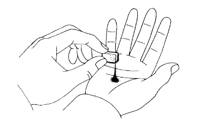 |
Remove the magnets, and use them to collect steel particles.
Carefully look at the foreign matter and particles in the pan and on the magnets to anticipate the type of wear you will find in the transmission.
| 2. INSPECT NO. 2 1-WAY CLUTCH ASSEMBLY |
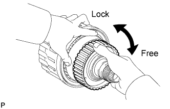 |
Hold the reverse clutch hub and turn the 1-way clutch assembly. Check that the 1-way clutch turns freely clockwise and locks when turned counterclockwise.
| 3. INSPECT REAR CLUTCH DISC |
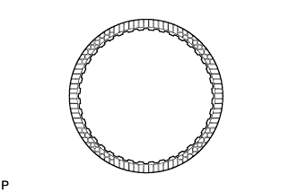 |
Replace all discs if one of the following problems is present: 1) a disc, plate or flange is worn or burnt, 2) the lining of a disc is peeled off or discolored, or 3) grooves have even a little bit of damage.
| 4. INSPECT REVERSE CLUTCH HUB SUB-ASSEMBLY |
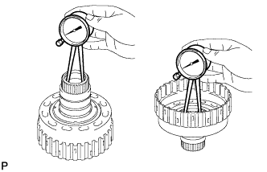 |
Using a dial indicator, measure the inside diameter of the reverse clutch hub bush.
| 5. INSPECT FORWARD CLUTCH HUB SUB-ASSEMBLY |
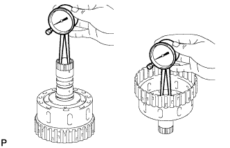 |
Using a dial indicator, measure the inside diameter of the forward clutch hub bush.
| 6. INSPECT NO. 4 1-WAY CLUTCH ASSEMBLY |
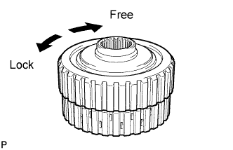 |
Hold the coast clutch hub and turn the 1-way clutch assembly. Check that the 1-way clutch turns freely clockwise and locks when turned counterclockwise.
| 7. INSPECT FORWARD MULTIPLE DISC CLUTCH DISC |
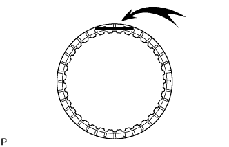 |
Replace all discs if one of the following problems is present: 1) a disc, plate or flange is worn or burnt, 2) the lining of a disc is peeled off or discolored, or 3) grooves or printed numbers have even a little bit of damage.
| 8. INSPECT COAST CLUTCH DISC |
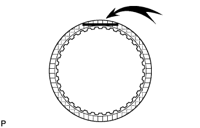 |
Replace all discs if one of the following problems is present: 1) a disc, plate or flange is worn or burnt, 2) the lining of a disc is peeled off or discolored, or 3) grooves or printed numbers have even a little bit of damage.
| 9. INSPECT FORWARD CLUTCH RETURN SPRING SUB-ASSEMBLY |
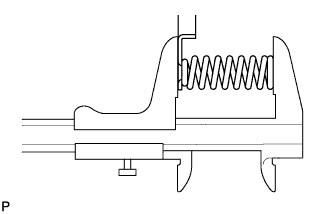 |
Using a vernier caliper, measure the free length of the spring together with the spring seat.
| 10. INSPECT DIRECT CLUTCH DISC |
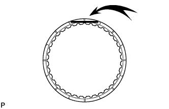 |
Replace all discs if one of the following problems is present: 1) a disc, plate or flange is worn or burnt, 2) the lining of a disc is peeled off or discolored, or 3) grooves or printed numbers have even a little bit of damage.
| 11. INSPECT REVERSE CLUTCH RETURN SPRING SUB-ASSEMBLY |
Using a vernier caliper, measure the free length of the spring together with the spring seat.
| 12. INSPECT DIRECT CLUTCH RETURN SPRING SUB-ASSEMBLY |
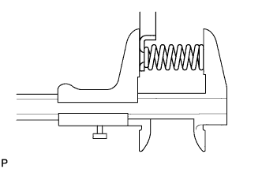 |
Using a vernier caliper, measure the free length of the spring together with the spring seat.
| 13. INSPECT NO. 3 BRAKE DISC |
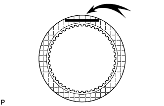 |
Replace all discs if one of the following problems is present: 1) a disc, plate or flange is worn or burnt, 2) the lining of a disc is peeled off or discolored, or 3) grooves or printed numbers have even a little bit of damage.
| 14. INSPECT NO. 3 BRAKE PISTON RETURN SPRING SUB-ASSEMBLY |
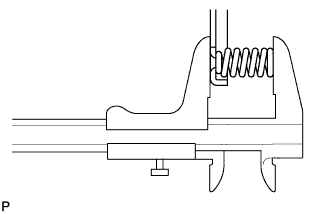 |
Using a vernier caliper, measure the free length of the spring together with the spring seat.
| 15. INSPECT FRONT PLANETARY GEAR ASSEMBLY |
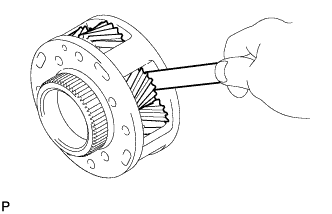 |
Using a feeler gauge, measure the front planetary pinion gear thrust clearance.
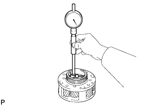 |
Using a cylinder gauge, measure the inside diameter of the front planetary gear bush.
| 16. INSPECT 1-WAY CLUTCH ASSEMBLY |
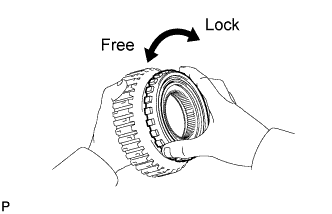 |
Install the 1-way clutch to the 1-way clutch inner race.
Hold the 1-way clutch inner race and turn the 1-way clutch. Check that the 1-way clutch turns freely counterclockwise and locks when turned clockwise.
Remove the 1-way clutch from the 1-way clutch inner race.
| 17. INSPECT NO. 1 BRAKE DISC |
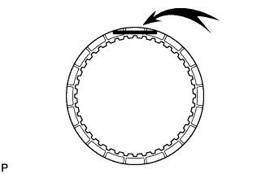 |
Replace all discs if one of the following problems is present: 1) a disc, plate or flange is worn or burnt, 2) the lining of a disc is peeled off or discolored, or 3) grooves or printed numbers have even a little bit of damage.
| 18. INSPECT BRAKE PISTON RETURN SPRING SUB-ASSEMBLY |
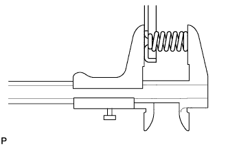 |
Using a vernier caliper, measure the free length of the spring together with the spring seat.
| 19. INSPECT NO. 2 BRAKE DISC |
Replace all discs if one of the following problems is present: 1) a disc, plate or flange is worn or burnt, 2) the lining of a disc is peeled off or discolored, or 3) grooves or printed numbers have even a little bit of damage.
| 20. INSPECT NO. 2 BRAKE PISTON RETURN SPRING SUB-ASSEMBLY |
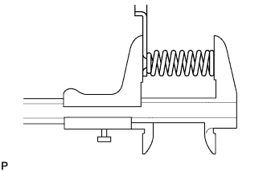 |
Using a vernier caliper, measure the free length of the spring together with the spring seat.
| 21. INSPECT CENTER PLANETARY GEAR ASSEMBLY |
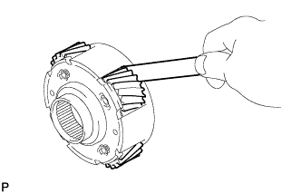 |
Using a feeler gauge, measure the center planetary pinion gear thrust clearance.
| 22. INSPECT NO. 3 1-WAY CLUTCH ASSEMBLY |
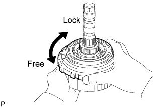 |
Hold the rear planetary ring gear flange and turn the 1-way clutch. Check that the 1-way clutch turns freely counterclockwise and locks when turned clockwise.
| 23. INSPECT INTERMEDIATE SHAFT |
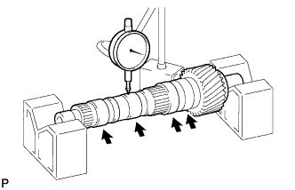 |
Using a dial indicator, check the intermediate shaft runout.
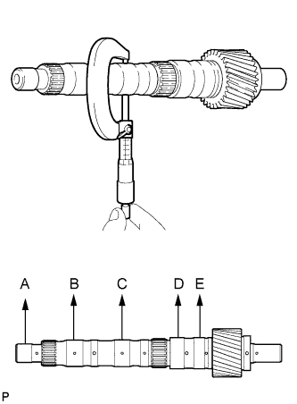 |
Using a micrometer, check the diameter of the intermediate shaft at the positions shown in the diagram.
| 24. INSPECT NO. 4 BRAKE DISC |
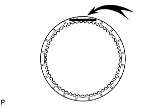 |
Replace all discs if one of the following problems is present: 1) a disc, plate or flange is worn or burnt, 2) the lining of a disc is peeled off or discolored, or 3) grooves or printed numbers have even a little bit of damage.
| 25. INSPECT REAR PLANETARY GEAR ASSEMBLY |
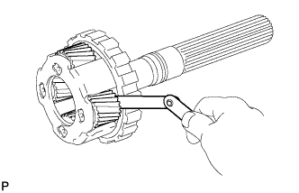 |
Using a feeler gauge, measure the rear planetary pinion gear thrust clearance.
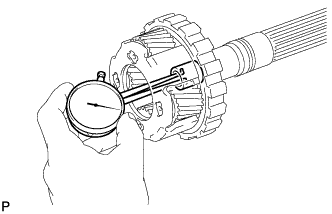 |
Using a dial indicator, measure the inside diameter of the rear planetary gear bush.
| 26. INSPECT 1ST AND REVERSE BRAKE RETURN SPRING SUB-ASSEMBLY |
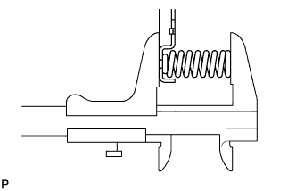 |
Using a vernier caliper, measure the free length of the spring together with the spring seat.
| 27. INSPECT INDIVIDUAL PISTON OPERATION |
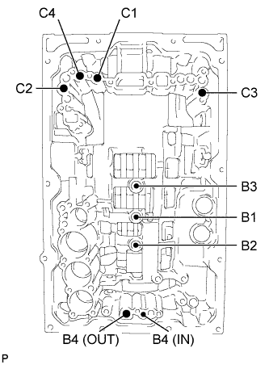 |
Check the operating sound while applying compressed air into the oil holes indicated in the illustration.